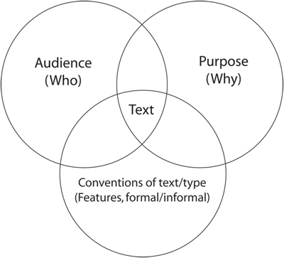

Writing strategies
There are a lot of strategies you can employ when writing!
Plan – plan your overall ideas, themes, content, paragraphs, development of ideas.
Consider the conventions or features of the text (eg the layout of a brochure, the sort of language used in an advertisement), the purpose of the text (informational/educational/persuasive) and the audience (who it is aimed at). These three are interrelated and will affect the language you use.

For example, the language and conventions you use in an advertisement (text-type) aimed at getting teenagers (audience) to buy a new mobile phone (purpose) will be different to the language and conventions you would employ in writing a job application.
Paragraphing conventions
If you are writing an essay or a story, or even a brochure, you should use paragraphing conventions. The topic sentence (first sentence) should introduce the main point of a paragraph. This should be followed by the body of the paragraph, including supporting evidence or information, and concluded with a closing sentence which restates the main point or argument.
Link paragraphs so the text flows and develops. If the first sentence in one paragraph is somehow linked to the last sentence in the last paragraph, then your writing flows nicely. It may be linked by theme (for example chillies), by an indicator of time passing (‘not long after the chilli has been eaten …’), or by a deliberate link phrase (‘Another type of chilli …’, ‘Although chillies are popular in Indonesia …’, ‘It has been suggested that chillies …’).
Add interest by using description
Of the following three opening lines to a story, which is the more gripping sentence?
- Tono was a boy.
- Tono was a naughty 12-year-old boy.
- Tono was a naughty 12-year-old boy who was extremely fond of chillies.
Did you choose the last one? Why? Description is used, as well as a link word (‘who’) to extend the sentence.
Adding interest by using variety
One way of varying your writing is to not use the same adjective all the time. Let’s face it, bagus is a great word (mohon maaf atas leluconnya …). But if you use bagus 27 times in a page of writing, it gets repetitive and looks as though you don’t know many other words. It is far better to show off your skill in a language than bore your audience. So, if you find yourself using a word over and over, try to vary it. For example, instead of bagus, use menarik, menyenangkan, cantik, luar biasa …
You can also modify adjectives by using words like ‘very’, ‘extremely’, ‘not so’. Sekali is another word that can be over-used, as there are options like sangat, amat, and even the slang form banget to make things a little more interesting.
Don’t be scared of experimenting!